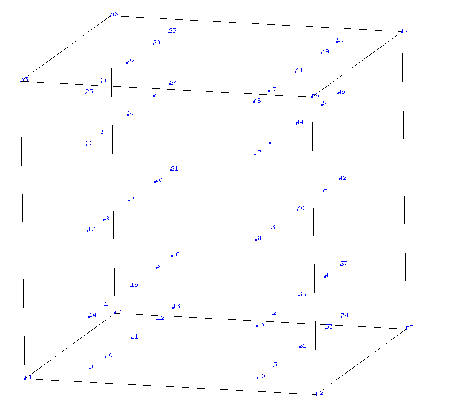
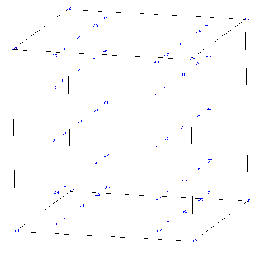
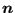

This is a spring element which is attached to only one node. The direction
 in which the spring acts has to be defined by the user
underneath the *SPRING keyword card by specifying the
appropriate degree of freedom. This degree of freedom can be local if the
ORIENTATION parameter is used on the *SPRING card. If
 is the
displacement in the spring node and
in which the spring acts has to be defined by the user
underneath the *SPRING keyword card by specifying the
appropriate degree of freedom. This degree of freedom can be local if the
ORIENTATION parameter is used on the *SPRING card. If
 is the
displacement in the spring node and  is the spring constant, the force is obtained by:
is the spring constant, the force is obtained by:
|  | (11) |
A nonlinear spring can be defined by specifying a piecewise linear force versus elongation relationship (underneath the *SPRING card).